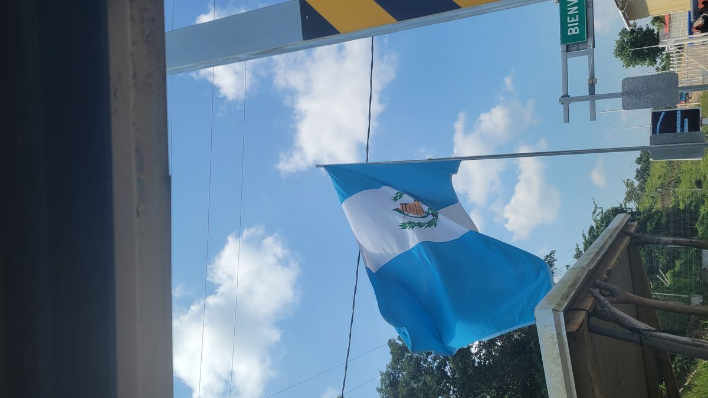
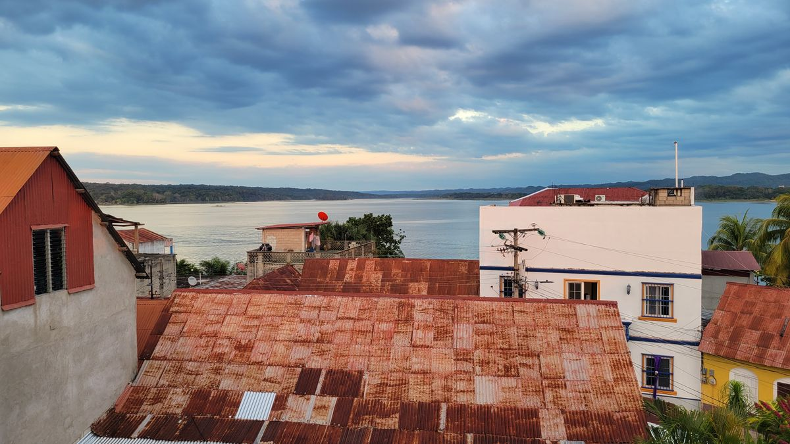
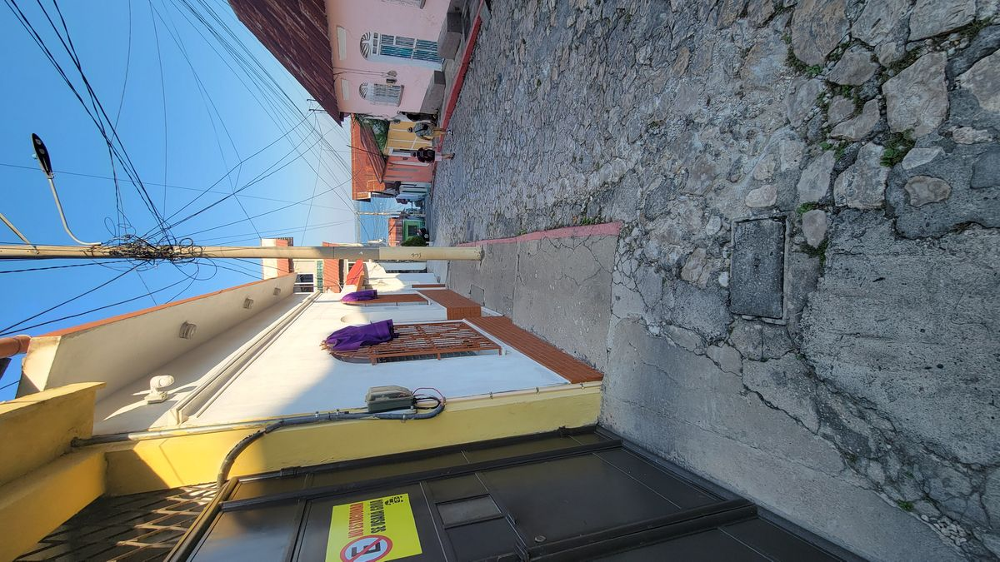
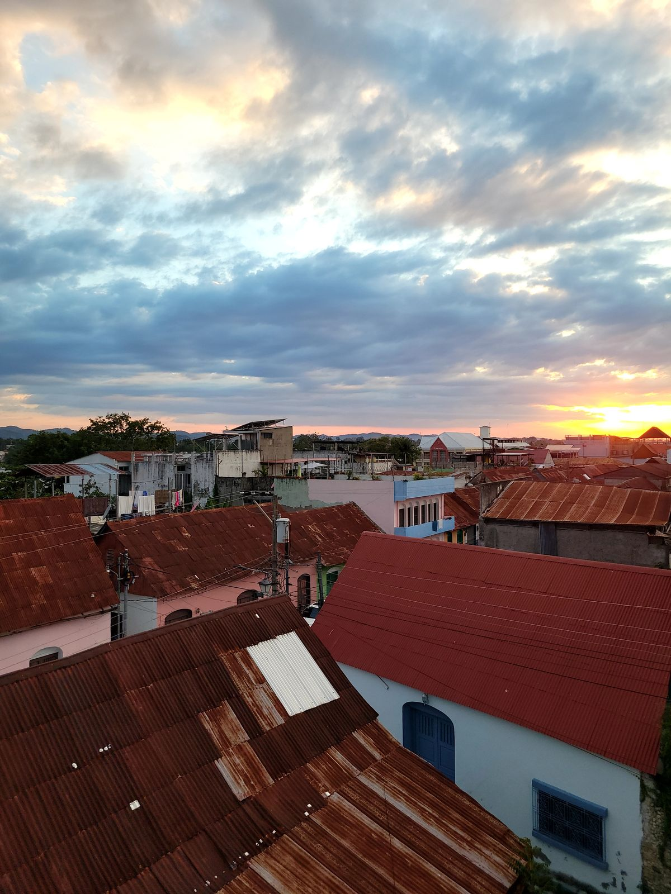
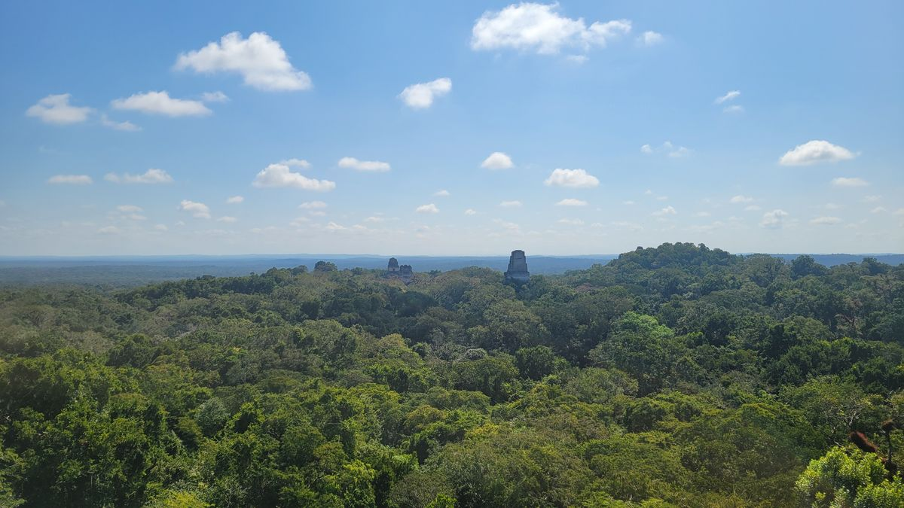
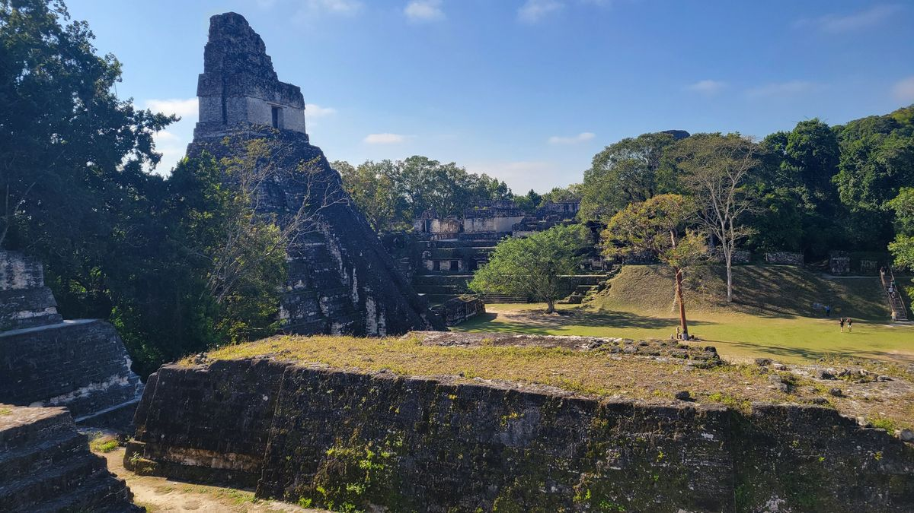
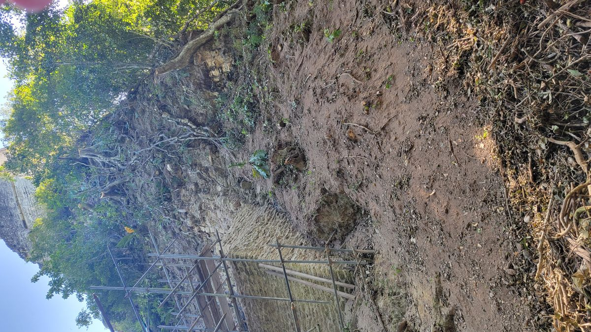

Flores, Guatemala
Finally, I had decided I had seen enough of Mexico for this trip. But, decided this here meant some major changes to my plans and goals. Like I said earlier, I had a loose goal to visit every country in Central America. Dipping out of Mexico to Guatemala now means I’ll have to skip Belize. After a few hours of careful consideration I decided that my idea of visiting every country wasn’t more important that my other goal of doing whatever I want. A tour agency in Palenque was advertising a shuttle from Palenque to Flores, Guatemala for about $40 USD. 6 hours in total and a driver on both sides of the border, this was the best way to leave Mexico since no bus companies operated the route.
Once out of Mexico the best/easiest way to travel is using the tourist shuttles. Locals predominantly use the famous Chicken Busses (retired American School busses, that have been “enhanced” locally). The Chicken busses are quite the cultural experience, the tourist shuttles have better schedules (usually), go direct to where you want to go and are by far more comfortable. Safety and security are real concerns on the chicken busses also. Even locals laugh uncomfortably when talking about it.
As smoothly as this adventure had been, it was time for a hiccup. If you remember when I arrived in Mexico I had to have an extra form and pay a fee to remain in Mexico for than a few days. I had to keep this form with me and return it when I exited Mexico. I had the form in my passport holder, I just didn’t realize that the date stamp was incorrect. I arrived in Mexico on January 3, 2024. No one had changed the year on the passport stamp and my passport and my migration form said January 3, 2023. Intitlaly it looks like I’m well outside my 180 toursit permit. Of course everything is digital nowadays, right? Or will a corrupt Mexican official use this as an excise to extort a “propina” from me? It doesn’t help this border crossing has recent reports of border officials asking for a tip.
We made our way out of Palenque and through various rural Mexican towns and arrived at the border. Our group of tourist were the only ones there except for a few local milling about for whatever reason. We are instructed to leave our luggage outside and line up outside on office. An office? Why isn’t there just a desk like at airport, or even in Tijuana? I’m told to go inside first and the official closes the door behind me. I’m about to get shook down aren’t I? I hand him my passport and exchange pleasantries.
“Hablas español?” He asks
“Un poquito” I reply. Making the international hand gesture for small with my thumb and pointer finger.
I hand him my passport and paperwork. And he scans it in the computer. It doesn’t scan. He then starts flipping through my passport looking for my entry stamp. He finds it. And the starts looking for another one because obviously Jan 3, 2023 isnt my entry date. I’m pretending not to know its incorrect so that it doesn’t confuse things any more.
“When did you arrive in Mexico” he asks in English.
“January third of this year” I reply.
“Where are you going?” he asks.
“Guatemala?” I say questionably as if there anywhere else to go at this land border crossing?
He looks at the stamp on my migration paperwork, also says 2023.
At this point I’m just playing stupid. Sitting there with a dumb tourist grin on my face.
He points to the migration paperwork where it says 180 days authorized.
“Yes, thank you for that. Maybe next time I will spend more time in Mexico” I say in English.
He doesn’t understand what I’m saying. He also is visibly starting to sweat, it’s not that hot in here. He starts typing my information into the computer manually. Still sweating. Me, just sitting there patiently.
He starts reading something aloud in Spanish.
“Yes, Mexico is a beautiful country. I wish to explore more someday.” I speak.
He hands me back my passport, keeps the migration form, as hes supposed to, and says “buen viaje” or good travels. He stamps my passport (with the correct date) and hands it back to me
“Listo?” I ask.
“Listo” he says and motions for me to leave. He hands me back my passport, but is still pointing to the “180 days” written on the migration paperwork.
Did I get recorded as an overstay in the Mexican migration computer? I have no clue. Time will tell. I’m just glad to be moving on.
Formalities on the Guatamalan side were a lot less exciting. Just stamp and “bienvenidos” from a friendly Guatemalan migration employee and I’m back in the shuttle for another 3 hours to Flores.

Flores.
Flores, Guatemala is a backpacker haven in the northern part of the Country. A city on an island in the middle of a lake, there’s definantly a tinge of Venetian vibes as you stroll its narrow streets (which traditional cars are not allowed) with the sound of the lake lapping just a few meters away. The town itself is just a mix of Hostels, hotels restaurants and convenience stores. Everything wary travelers need. The town in the gateway for the famous Tikal archeological site, Guatemala’s most famous set of Mayan ruins. Most people only spend a few days here though as there really isn’t much of anything else to see.



Tours for Tikal start early. The busses leave from Flores at 4am. This ensures you can get to the site at sunrise, before masses of tourist arrive from other cities later in the morning. It’s actually for the best. Although the group will be large, its easy to spread out in the expansive site that is Tikal and not be shoulder to shoulder with tourists.
The guide for our tour today is a local to the site. He explained how the area was only designated a national park in the early 90’s and how he grew up climbing the various temples and pyramids as a kid. He worked with the archaeology teams helping to uncover and restore various structures in the site. He also has a Texas and British accent having never been to either. He learned English by watching English media from the US and the UK. He knew all about the flora and fauna of the site. It was much better experience than someone just reciting facts they were given by the tourist office.
For me though, this was my 4th set of ancient ruins in just a few weeks. However amazing and astonishing they are, you can only see so much before the awe wears off. Tikal is beautiful. Tikal was amazing. Tikal was overload for me. In other circumstances this could have been an amazing experience. This time was just a check in the box.



We left the site mid-morning and I got back to the hostel with a mission to mix things up a bit. Being a passive tourist just wasn’t cutting it anymore. But I didn’t know what to do. Up until this point I had been following a guidebook, going to places and doing thing that are professional recommended. Obviously, most people who buy those don’t have time to do everything it recommends and never realize just how repetitive it can be. Big Church, check. Ancient history, check. List of restaurants with similar food, check. If you’re only seeing a few places this is sufficient. If you have time to see it all, you probably shouldn’t.
I spent the evening perusing the offerings of the local tour operators thinking about how to mix things up. What did I need to do to keep the fire ignited in me, to keep this trip exciting?